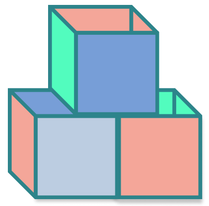

My Role
Ux Designer & Researcher
Summary
cubby is a cloud storage platform where you can create, store, and share your content from any mobile device, laptop, or computer. The purpose of this project was to simplify the task of keeping a user organized, while demonstrating how cloud storage can be a beneficial and helpful tool.
cubby is a cloud storage platform where you can create, store, and share your content from any mobile device, laptop, or computer. The purpose of this project was to simplify the task of keeping a user organized, while demonstrating how cloud storage can be a beneficial and helpful tool.
Deliverables
- User Research
- Competitive Analysis
- User Personas
- User Flows
- Wireframes
- Branding & Style Guide
- User Testing
- Hi-Fi Prototype

Tools
- Sketching
- Google Forms
- Figma
- Illustrator
Problem
Through a comprehensive survey, 100% of participants confirmed they use cloud storage, but 25% of those users don't understand how cloud storage works or what purpose it serves. They know they need it, but don't know why they need it.
Solution
Build a conceptual model, in this case a cubby, that would store all of the content. By doing so, it provides users with a visual understanding of where their belongings are located.
When uploading or creating content, users are prompted to save their items in a designated cubby. Types of cubbies users could have include:
- Recipes
- Photos
- Drafts
- Records
- Docs
- PDFs
User Research
I began with a user survey, polling participants between the ages of 18-74, living in cities as well as suburbs. I quickly found that whether it's for professional or personal use, or both—cloud storage is a needed and important service.
Core user needs:
- Easy to share content with others
- Allows more storage space on hard drive
- Content is backed up
Areas to improve:
- Lack of organization
- Price is too high
- Don't understand how it works

User Analysis Findings
From the survey analysis and phone interviews, I concluded that the product needed to be straight-forward, organized, and affordable. With so many cloud storage services out there, how could I make this one stand out? I decided to target a specific group: those who consider themselves "non-tech."
"It's not intuitive for older users and often isn't explained well."
—Peter, 54-years-old, Providence
"I should know more about cloud storage, but it goes way over my head."
—Amelia, 33-years-old, Queens
"I let my IT guy at work handle it. Seems too complicated, I don't have the patience."
—Mary, 28-years-old, Boston
Competitve Analysis
I took a deeper look at my competitors and conducted a competitive analysis. I studied 3 top services that specialize in cloud storage:
Google Drive has over 1 billion people registered and offers the most amount of free storage space. You have access to Google Docs and Sheets, and quick links to Google Maps and Youtube. But with so many users, the chances of being hacked are high.
DropBox is one of the original leading cloud storage providers. This product has brand name recognition and is well-established, but provides the lowest amount of storage space for free.
Box offers an unlimited number of users working on the same cloud, and has managing and monitoring tools. However, it better serves those in a business environment as opposed to an individual.
Personas
Based off of my user survey and follow-up phone interviews, I created a couple of personas highlighting certain themes that were prevalent.
User Stories
From analyzing data and interviews, I created user stories to reflect the top needs. This was a helpful exercise showcasing what features were deemed necessary. What remaind now was a simple and understandable design that would faciliate these tasks.
Top priorities
- Saving & uploading content
- Creating & organizing content
- Sharing & collaborating content
User Flows
The visual design process began with sketching basic user flows. What would the onboarding experience look like? How could the user view content? What was invovled in sharing content? I wanted there to be helpful steps so the user didn't feel lost, but I also wanted to be mindful of cognitive overload. The goal was to strike a balance between clear, easy prompts but not to overwhelm the user.
Wireframes
Once I had my user flow sketches and site map ironed out, I began to work on wireframes. I knew I wanted a cubby visual on the landing page and on the main dashboard, but it was still unclear how that would look. Would the cubbies be side-by-side, or would they be spaced out?
As for the content, I intended it to be thoughtful and engaging but not overbearing. The user should feel supported and guided, but not bothered by the assistance.
Prototype
From my wireframes, I created clickable prototypes and tested them on 3 individuals. The feedback I received was that the design layout was comprehendible brand the content engaging, however the participants felt the cubby design was distracting and too pronounced. I still wanted to keep this visual model, but knew I had to simplify it, in order to be effective.
Helpful Feedback
- The exclamation point was meant to be seen as an "important item" but instead folks thought there was an error with uploading the file.
- Users didn't need multiple "switch to work" functions, one was sufficient.
- There was confusion on how to organize or filter a cubby. Questions arose: could you color code them, could you flag them, what kind of order would they be in?
Prototype Observations
It was exciting to see cubby take shape and become a tool for people to use! Testers liked the concept, but the visual element needed work. I learned that one of the most important features: organization, was lacking. Participants asked thoughtful questions about organization that I had failed to consider. I needed to go back to the drawing board and address those concerns.
Branding & Style Guide
When I first began working on this project, I thought about items that could hold multiple things. Initially the idea of a shelf with books came to mind. I wondered if those items could symbolize items you would have on your cloud storage space.
Early sketches
Second round of sketches
While fine-tuning my logo, I began to establish the color palette. My goal was for the user to have a calming and emotional response. Organizing content whether on a device or physically in front of you, can be an overwhelming and daunting task. I wanted to the colors to be warm and inviting, encouraging the user to take their time and enjoy the site.
#52BFFC
#49DEB2
#FCCA52
I tested early mockups using the color black for text, but instead opted for a darker grey to lighten the page. The background is the color white to keep the site simple and clean. As for fonts, I chose SF Pro Rounded semibold as the primary text, and Open Sans as the secondary text. I wanted the style and brand of cubby to carry a feeling of fun and welcoming.
SF Pro Rounded Semibold
Primary Text
Open Sans Regular
Secondary Text
#595959
#FFFFFF
Final Logo
View style guideHi-Fi Mockups
There were 5 rounds of Hi-Fi screen testing. I created and piloted these clickable mockups using Figma. Due to COVID-19, testing was done over FaceTime and Zoom.
Conclusion
If I had more time and resources, I'd continue testing and iterating over the minimum viable product (MVP). I would have liked to add animatoin to the homepage, and allow the user to color code different cubbies.
The biggest lesson I learned was never to assume what your user knows. Because 100% of participants confirmed they use cloud storage, I subsequently assumed they knew how the service worked and why it existed, but that didn't turn out to be the case! This small discovery was a domino effect. The survey results, interviews, and research are so essential to the design outcome—for that is where your opportunity to grow unveils itself.